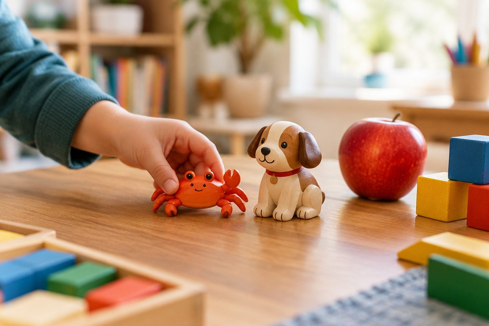

전체 단원 › 1학년 1학기 › 국어 › 2단계 · 복잡한 모음 ㅐ ㅔ ㅚ ㅟ ㅘ ㅝ ㅢ
모음 두 개가 만나면 어떤 소리가 날까?

모음 두 개가 만나면 새 모음이 돼요. 게, 사과 속에 숨어 있어요!
ㅐ와 ㅔ는 쌍둥이 소리
ㅏ에 ㅣ를 붙이면 ㅐ예요.
ㅓ에 ㅣ를 붙이면 ㅔ예요.
둘은 소리가 거의 같아요. 낱말로 기억해요.
개 / 게
ㅗ, ㅜ와 만나는 모음
ㅗ와 ㅏ가 만나면 ㅘ [와]예요.
ㅜ와 ㅓ가 만나면 ㅝ [워]예요.
ㅗ+ㅣ는 ㅚ, ㅜ+ㅣ는 ㅟ예요.
사과, 원숭이, 참외, 쥐
ㅡ와 ㅣ가 만나면 ㅢ
ㅡ와 ㅣ를 붙이면 ㅢ예요.
입을 옆으로 벌리고 [의] 해요.
의자, 의사
빠르게 이어 읽어요
두 소리를 빠르게 이어 읽어요.
오+아를 빨리 하면 [와]가 돼요.
오+아 → 와, 우+어 → 워, 우+이 → 위
핵심 낱말
- 모음
- ㅏ, ㅓ, ㅗ처럼 소리를 내는 글자
- 복잡한 모음
- 모음 두 개가 합쳐져 만든 모음(ㅐ, ㅘ, ㅢ 등)
- 이어 읽기
- 두 소리를 끊지 않고 빠르게 붙여 읽는 것
꼭 알아야 할 표현
| 애 | ㅇ + ㅐ (ㅏ와 ㅣ가 만났어요) | [애] |
| 에 | ㅇ + ㅔ (ㅓ와 ㅣ가 만났어요) | [에] ㅐ와 소리가 거의 같아요 |
| 와 | ㅇ + ㅘ (ㅗ와 ㅏ가 만났어요) | [와] |
| 워 | ㅇ + ㅝ (ㅜ와 ㅓ가 만났어요) | [워] |
| 외 | ㅇ + ㅚ (ㅗ와 ㅣ가 만났어요) | [외] 또는 [웨] |
| 위 | ㅇ + ㅟ (ㅜ와 ㅣ가 만났어요) | [위] |
| 의 | ㅇ + ㅢ (ㅡ와 ㅣ가 만났어요) | [의] |
| 개 | 🐶 멍멍 짖는 동물 | [개] |
| 게 | 🦀 옆으로 걷는 바다 동물 | [게] |
| 사과 | 🍎 빨간 과일 (과 = ㄱ + ㅘ) | [사과] |
| 쥐 | 🐭 찍찍 우는 작은 동물 (쥐 = ㅈ + ㅟ) | [쥐] |
| 의자 | 🪑 앉는 물건 | [의자] |
한 줄 정리
- 모음 두 개가 만나 새 모음이 돼요.
- ㅐ와 ㅔ는 소리가 비슷해서 낱말로 기억해요.
- ㅘ, ㅝ, ㅟ, ㅢ는 두 소리를 빠르게 이어 읽어요. ㅚ는 [외]나 [웨]로 읽어요.
학교 교육과정 연결
- [2국04-01] 한글 자모의 이름과 소릿값을 알고 정확하게 발음하고 쓴다.